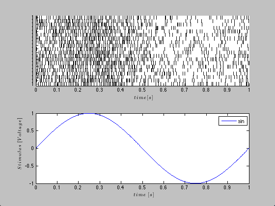
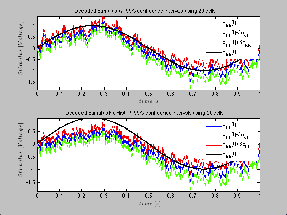

1-D Stimulus Decode with History Effect
In the above decoding example, the simulated neurons did not have memory. That is their previous firing activity did not modulate their current probability of firing. In reality the firing history does affect the probabilty of neuronal firing (eg. refractory period, bursting, etc.). In this example, we simulate a population a neurons that exhibit this type of history dependence. We then decode the stimulus activity based on a conditional intensity function that includes the correct history terms and one that assumes no history dependence.
close all; % clear all; delta = 0.001; Tmax = 1; time = 0:delta:Tmax; f=1; b1=1;b0=-2; stimData = b1*sin(2*pi*f*time); e = zeros(length(time),1); %No Ensemble input mu = b0; %baseline firing rate Ts=delta; histCoeffs= [-2 -2 -4]; windowTimes=[0 .001 0.002 0.003]; histObj = History(windowTimes); filts = histObj.toFilter(Ts); %Convert to transfer function matrix H=histCoeffs*filts; %scale each window transfer function by its coefficient S=tf([1],1,Ts,'Variable','z^-1'); %Feed the stimulus in directly E=tf([0],1,Ts,'Variable','z^-1'); %No ensemble effect stim=Covariate(time',stimData,'Stimulus','time','s','Voltage',{'sin'}); ens =Covariate(time',e,'Ensemble','time','s','Spikes',{'n1'}); numRealizations = 20; %Number of sample paths to generate sC=CIF.simulateCIF(mu,H,S,E,stim,ens,numRealizations); figure; subplot(2,1,1); sC.plot; subplot(2,1,2); stim.plot; for i=1:numRealizations % Construct a CIF object for each realization based on our encoding % results above %correct CIF w/ History lambdaCIF{i} = CIF([mu b1],{'1','x'},{'x'},'binomial',histCoeffs,histObj); %CIF ignoring the history effect lambdaCIFNoHist{i} = CIF([mu b1],{'1','x'},{'x'},'binomial'); end sC.resample(1/delta); dN=sC.dataToMatrix; % Make noise according to the dynamic range of the stimulus Q=2*std(stim.data(2:end)-stim.data(1:end-1)); Px0=.1; A=1; % Decode with the correct and incorrect CIFs [x_p, W_p, x_u, W_u] = DecodingAlgorithms.PPDecodeFilter(A, Q, Px0, dN',lambdaCIF,delta); [x_pNoHist, W_pNoHist, x_uNoHist, W_uNoHist] = DecodingAlgorithms.PPDecodeFilter(A, Q, Px0, dN',lambdaCIFNoHist,delta); % Compare the results figure; subplot(2,1,1); zVal=3; ciLower = min(x_u(1:end)-zVal*squeeze(W_u(1:end))',x_u(1:end)+zVal*squeeze(W_u(1:end))'); ciUpper = max(x_u(1:end)-zVal*squeeze(W_u(1:end))',x_u(1:end)+zVal*squeeze(W_u(1:end))'); hEst=plot(time,x_u(1:end),'b',time,ciLower,'g',time,ciUpper,'r'); hold on; hold all; hStim=stim.plot([],{{' ''k'',''Linewidth'',2'}}); legend off; legend([hEst(1) hEst(2) hEst(3) hStim],'x_{k|k}(t)',strcat('x_{k|k}(t)-',num2str(zVal),'\sigma_{k|k}'),... strcat('x_{k|k}(t)+',num2str(zVal),'\sigma_{k|k}'),'x_{k|k}(t)','x(t)'); title(['Decoded Stimulus +/- 99% confidence intervals using ' num2str(numRealizations) ' cells']); subplot(2,1,2); zVal=3; ciLower = min(x_uNoHist(1:end)-zVal*squeeze(W_uNoHist(1:end))',x_uNoHist(1:end)+zVal*squeeze(W_uNoHist(1:end))'); ciUpper = max(x_uNoHist(1:end)-zVal*squeeze(W_uNoHist(1:end))',x_uNoHist(1:end)+zVal*squeeze(W_uNoHist(1:end))'); hEst=plot(time,x_uNoHist(1:end),'b',time,ciLower,'g',time,ciUpper,'r'); hold on; hold all; hStim=stim.plot([],{{' ''k'',''Linewidth'',2'}}); legend off; legend([hEst(1) hEst(2) hEst(3) hStim],'x_{k|k}(t)',strcat('x_{k|k}(t)-',num2str(zVal),'\sigma_{k|k}'),... strcat('x_{k|k}(t)+',num2str(zVal),'\sigma_{k|k}'),'x_{k|k}(t)','x(t)'); title(['Decoded Stimulus No Hist +/- 99% confidence intervals using ' num2str(numRealizations) ' cells']);
Warning: Ignoring extra legend entries. Warning: Ignoring extra legend entries. 
We see that inclusion of history effect improves (as expected) the decoding of the stimulus based on the point process observations